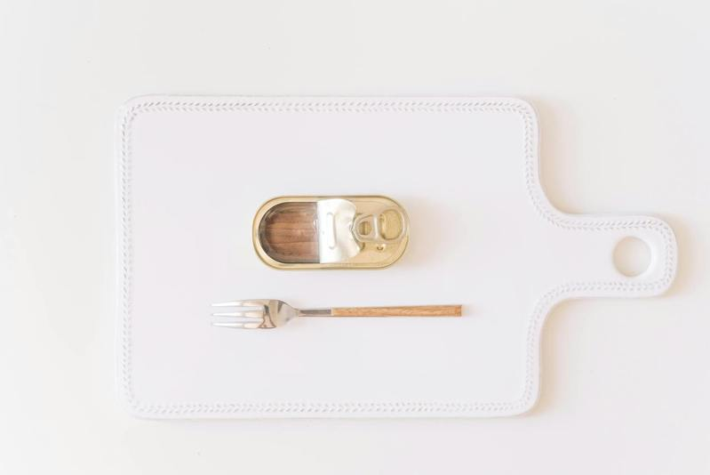

许多罐头熟食里都有该食物的汤汁，有些人食用或料理时可能会选择将这些汤汁直接倒掉。然而，这些汤汁本身其实带有一些味道，可以当作调味料加以使用，相关厂商也呼吁不妨留着，下厨时能派上用场。
根据日本媒体「grape」报导，罐头内的汤汁有其功能，包括让减少食材和空气接触，防止食材氧化、劣化，以及带出食材的风味，还有借由着汤汁的味道，让人在品尝罐头，或者使用罐头下厨时，可以缩短料理时间。
日本食品公司「玛鲁哈日鲁」针对罐头汤汁的问题，表示这些汤汁带有食材的味道，可以说是混合了天然高汤，因此在品尝罐头时，不妨就连着汤汁一起享用，更能吃到鲜味和营养。
不过在利用罐头料理时，必须要注意一点：那就是罐头为了延长保存期限，往往含有比较多的盐分，或者味道下得比较重。因此若是没注意好，就会使得菜色味道变得太咸或太辣等等。因此在料理时，最好做适量调整浓度，例如用加水稀释等等的方式，再用来为食物增添风味。